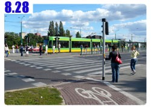
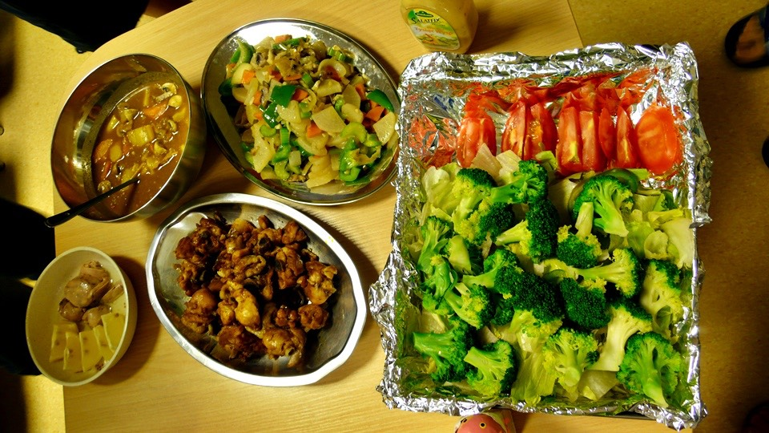
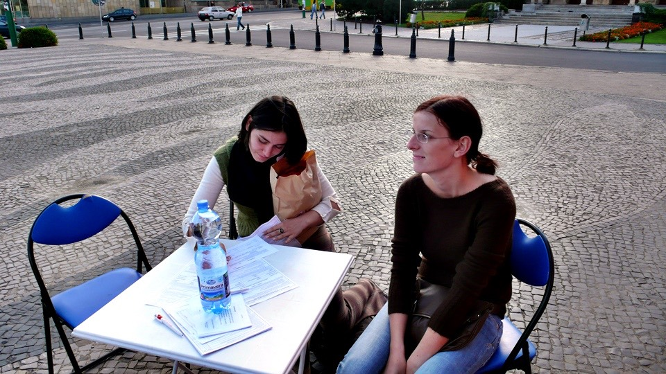

Ever since arriving to Goose’s dorm,
I have stayed in completely in the room browsing the internet and writing the travel diaries.
I didn’t leave the dorm at all on August 27th.
The travel diaries from August 27th are actually the travel from the afternoon of August 26th.
That night the Poznana student from Taiwan cooked a scrumptious meal for me to eat.
The person who cooked the meal for me was too busy to eat, they had to go back to study for their test.
This is so sad. T_T

Three Cup Chicken and Curry are great; the meal also supplemented my lack of vegetables from previous meals.
If you have friends who are Indian, then they would look down upon you for using curry seasoning cubs to make curry.
It doesn’t matter as long as the flavor is great.
The weather wasn’t good that night, dark clouds were very low and dark.
The cold breeze at night makes the temperature keep going down.
Does this mean the few good weather days will end?
After I got up, it was still blue skies. Good thing it didn’t rain or I would stay in the dorm for another day.
When I turn on the computer and started typing on the keyboard,
looking at the bright sunlight with white clouds outside makes me want to find an alligator to fight.
If I win, then I wouldn’t need to write the travel diaries anymore.
A little past three Goose came back from his class.
He opened the door and saw me still in the dorm and said “Wow, are you a dorm dwelling male?”
Actually, it isn’t terrible being a dorm dweller.
However with the nice weather today, and I just finished the travel diaries,
I can finally go out joy riding the bike with no destination in mind.
Today I want to prove that I wasn’t talking out of air about Poznana’s beautiful girls.
The below photos are taken within an hour.
I have also included the photos Goose took of the beautiful girls on street.
People who want to look ahead and skipping useless talks can do so.
Those photos do not need words to describe.
From this photo you can see the yellow pedestrian walking button on the traffic light.
A few seconds after pressing the button, the light will change to green.
The pedestrians follow the traffic signal and walk on the pedestrian walk way.
MPK is the abbreviation for Miejskie Przedsiębiorstwo Komunikacyjne, the city’s public transportation office.
Here it sells the tickets for cable cars and buses.
The stores on the street also sell tickets, but the MPK office do a bit more such as adding value to the monthly pass.
This is the final stop for the cable car.
Poznana’s cable car is very long but not as wide so it doesn’t give the fatness feeling.
The entrance hangs a sign says [Solid Security], the security company.
When I was camping at Warsaw, twice this security company asked me to leave.
This means they take their jobs seriously. Even though that is annoying but it also means they are trustworthy.
This is the little frog convenience store seen all over Poznana.
Shopping here means picking out what you want yourself and pay at the counter.
This isn’t like Russia’s conservative shopping style.
The weather is extremely great. The roads used by cars, cable car, and bikes all have marked out on the street.
Everyone uses the roads they are suppose to take as long as there is a sign indicating
on where each is suppose to go, or else a ticket soon follows.
If there is no sign for bike path, in theory it means the whole city is bike friendly.
However, when crossing the street I must get off the bike and walk the bike, or else a ticket follows.
The cable car has large windows for viewing.
Sitting in it allows viewing of the whole city. I constantly see girls handing out advertisements on the street

Cable cars have different colors although yellow with green ones are most common.
This blue cable car is also pretty.
The street lights all have been designed which makes any photos on the street a beautiful postcard.
This is Poznana’s tradition; the streets are named after famous people.
The street names uses whole names so each street name is very long.
Underneath the street sign there will also be photo and biography of the person,
explaining what the person did for Poznana.
This is the poet Adam Mickiewicz’s memorial park.
The fountain is beautiful with lots of people lying on green grass sunning on it.
There is a big building right across from the fountain.
This is the national theater which shows cases first class opera performance with cheap tickets.
This allows the public to experience art without having to pay a lot.
The best seat of the house is close enough to smell the perfume
on the performer with one ticket less than $600 NT (~$19 USD).
At this price in Taiwan, the only available seat is the one requiring a binocular to see the small people on the stage.
The cheapest ticket here is about the same as buying a bottle of soda.
Most of the operas are performed in Italian with Polish subtitles.
If there is a chance to visit inside, then it is also an experience.
This is the traditional yellow with green cable car. I have only ridden the bus but not the cable car yet.
Other than the fact that the cable car drives on the tracks, all the traffic rules apply as well.
All sort of architecture is seen, not only is there red bricks with green roof, all styles of building are seen in Poznana.
Today there is a red bus with a yellow cross sign on it parked in front of Adam Mickiewicz’s statue.
The bus also has hospital writings on it. This looks like a mobile blood donation bus.
The background is a castle, maybe a past king lives here.
There are lots of Mucha’s posters all over the city; there is also a Mucha poster on the castle.
I went over to the blood donation bus and asked if foreigners can donate blood as well?

However, neither of those 2 girls are staff but pretty girls who are donating their own blood as well.
They told me foreigners should be able to donate blood but the forms are in Polish.
I would need to find someone who can translate the form for me so I can fill the form out.
This is too bad because if the 2 girls are nurses and asking for blood donation,
80% of the guys would be willing to donate all their blood.
This building is next to the castle, which is the building hosting Mucha’s art exhibition.
The art exhibition lasts until November for this Czechoslovakia artist.
Based off this poster, Mucha’s art is a danger to Lolita Complex.
It is very common to see beautiful girl walking a big dog.
However, I only saw a little girl walking a strange dog today.
There are a lot of dogs here but very few dog poops on the street.
Some square in the city. The surrounding buildings are the main branch offices of big banks.
The building closest is the largest chain book store in Poznana.
Most of the streets name signs hang on the side of the building.
The signs on the streets are signs telling distance to a destination or a particular location.
Different locations use different sign colors. The type of signs for Movie Theater and monastery are different.

There are lots of pigeons in Poznana.
Other than people feeding them bread, there are also places that have food and water for the pigeons.
All the pigeons are well feed and not afraid of people.
The islands separating the streets are planted with alternating red and yellow flowers.
The flowers are beautiful and bloom for a long time, all the way until snow falls.
The flowers are replanted again during the following spring.
This is another student passing out advertisement.
Most of the Poznana female students wear a cap and pony tail, and carrying backpack and earphone.
This building next to Adam Mickiewicz’s statue, covered with greeneries, is the auditorium to a university.
There is symphony band inside, so there must be high quality performance for people to enjoy.
This is the entrance to the art college.
If the entrance has a sign in white words with red background,
it means the building is a government office or an important building.
Those signs also mean the building is available for the public to visit.
Another view of greeneries. Poznana is a beautifully planned city with lots of greeneries; the air quality is also great.
There is a taxi on the right side. BMW isn’t that unusual here; lots of BMW are used as taxis in Poznana.
A Fiat is more popular, and very cute a swell.
The darker skin is like a burnt wheat color, even though she is also a citizen of Poznana.
Poznana doesn’t have beaches but there are lots of indoor tanning salons.
Regardless how beautiful the girls are, they aren’t edible.
I ate a nice dinner in a famous restaurant in the suburbs opened in 1937.
The decoration inside the restaurant is clean and well lit.
There is even a large yellow duck toy on display. The chef’s recommendation here is apple and duck.
Most of the people come here order apple and duck. The price isn’t cheap, 100g (0.22 lbs) cost $8 Zlit.
Half of a duck is about 500g (1.10 lb), which is $40 Zlit ($14.6 USD);
adding on $7 Zlit ($2.54 USD) worth of appetizer, drink, and soup. It cost about $700 NT ($22 USD) per person.
The first dish is duck blood soup. A special technique is used so the duck blood doesn’t solidify
with the addition of duck gizzard and noodle dumplings. The flavor is like any other Polish dish, salty.
The main dish, apple and duck, half duck grilled to perfection.
The skin is crispy with tender duck meat and the addition of sweet grilled apples.
On the sides are some fresh vegetables and 2 bread buns. Polish people also like bread buns.
Half of a duck is perfect for one person. If I eat a whole duck, I would be too full.
If girls come, they would only need 1/4 of a duck.
On the way back to the dorm I got some ice cream from the store as dessert.
The store also sells vegetables. The cheapest vegetables are potatoes; 1kg of potatoes is less than $1 Zlit ($0.36 USD).
Taiwan has lot of potatoes that are shipped from Poland and then processed in Taiwan;
this means lot of people has eaten potatoes from Poland.
This is the processed meat section in the frozen section. It is rare to see beef in Poland.
The beef meat is skinny and expensive. For 1kg (2.2 lbs) of beef it sells for $500 NT ($15 USD).
Instead there are lots of processed pork and chicken such as sausages, salted meat, and ham.
There is the bread bun on the top left, which only needs to be heated a bit to be edible.
It is getting close to the Chinese Moon Festival; the moon in the sky is very bright and round.
The night in Poznana is different. For people who prefer night time stores can also find night time activities in Poznana.
After my meal and ice cream, Gorilla is prepared to change the chain on the bike.
I took out the spare chain brought from Taiwan, so I am ready to solve the chain problem once for all.
Taking off the old chain first. When I changed to the new tires previously, I added lots of lubricating oil.
This combined with the dust from the ride, the bike is very dirty.
I am prepared to bring the old chain that just got taken off back to Taiwan.
This is much easier to carry than the old tires. Then the new chain, which RST helped to obtain, is added onto the bike.
Because of my bike repairing skill, the new chain is snap on type which takes 3 seconds to do.
After that it takes about 30 minutes to adjust the speed change on the bike.
This section is for Gorilla to do.
The adjustment is made so there isn’t no strange sound when speed changes, and the chain won’t fall off the tooth on the bike.
This does take someone with skills to do. Once the speed adjustment is done, I took the bike downstairs for a test ride.
This is a wonderful change from the past; there is no more of strange sound and vibration.
This means the rest of the ride to Paris will be a lot easier,
and there is no need to change the chain for the riding trip around Taiwan in the future.
== Below are Goose’s take on beautiful girls on the street. ==